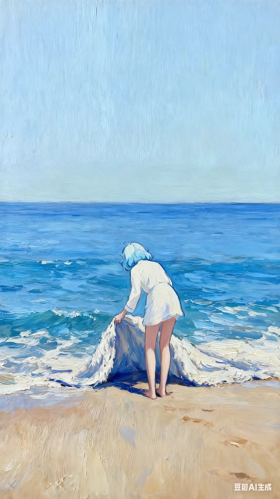
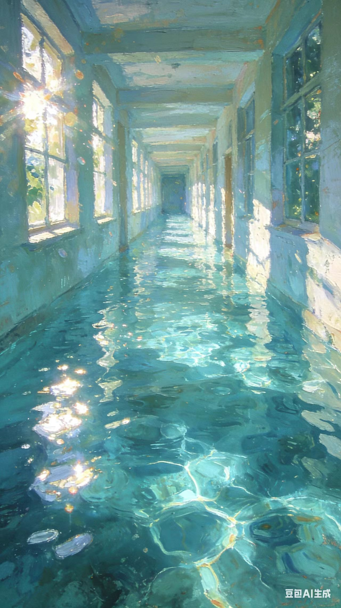
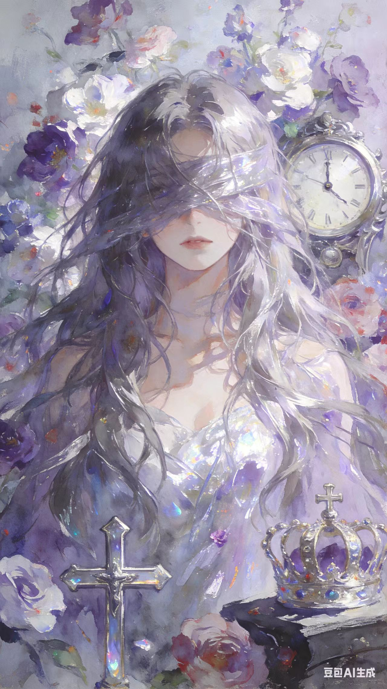

Mind Is A Fractal
意识不是答案，而是追问自己的回声。

Reason In Mist
理性像雾，不遮蔽世界，只揭示边缘。

Being As Motion
存在并不静止，它在每次犹疑中转向。
Order Of Silence
沉默并非空白，它排列了思想的纹理。

Self Is A Threshold
自我不是房间，而是一道持续开启的门槛。
Abstractum Philosophia
当形象退后，思想开始发光；当意义破碎，真实才显形。